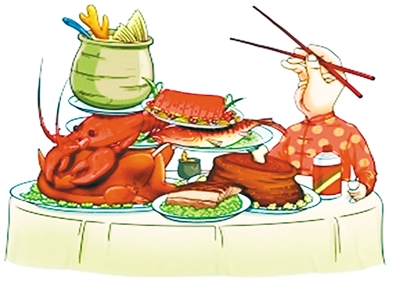

得了“嘴馋病”？ 馋狠了或真是病
2016-02-18 10:04:31 来源: 综合 作者:
有没有发现，过了一个春节，大家都变馋了，特别容易饿。在网上一搜索：很多人都得了一种病，叫“嘴馋病”。难道我们都病了?
对于一些人来说，“吃”会让人产生快乐激素。医生说，尤其是在压力大的时候，饱餐一顿或者狂吃一气后感觉神清气爽，心情立马舒畅了很多。“吃”让人快乐就形成了神经环路。

那为啥过了年，人就变得嘴馋?这是因为，过年期间，多数人是“从早吃到晚，不会感觉饿”。上班后，习惯还未切换到正常的一日三餐，内心还在想着食物。尤其是下午3~6点，最有饿的感觉，想吃东西，因为此时体内的血糖在降低，人开始变得慵懒。
如此表现，是病了吗?如果有节制有计划地吃，没有必要克制。但如果控制不了地想吃，吃饱了还想吃，不吃就浑身难受，这个时候可能就有病了，最为严重的就是贪食症，贪食症是一种精神上的异常，患者在生理上并不需要进食，但心理上却有长期饥饿的感觉，大部分的病患者有感情问题及情绪不稳定，所以借着强迫进食来逃避痛苦的问题。
如何让“嘴馋”不是病?制定目标，挑选小袋包装的食品。形成良好的饮食习惯，逐步恢复之前的“一日三餐”定时定量的节奏。